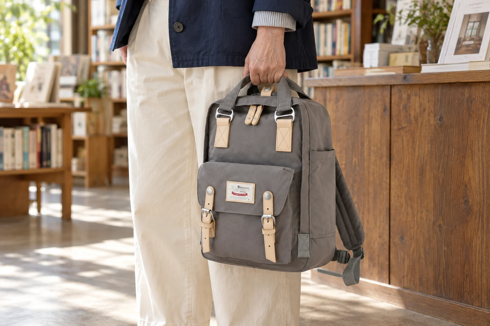
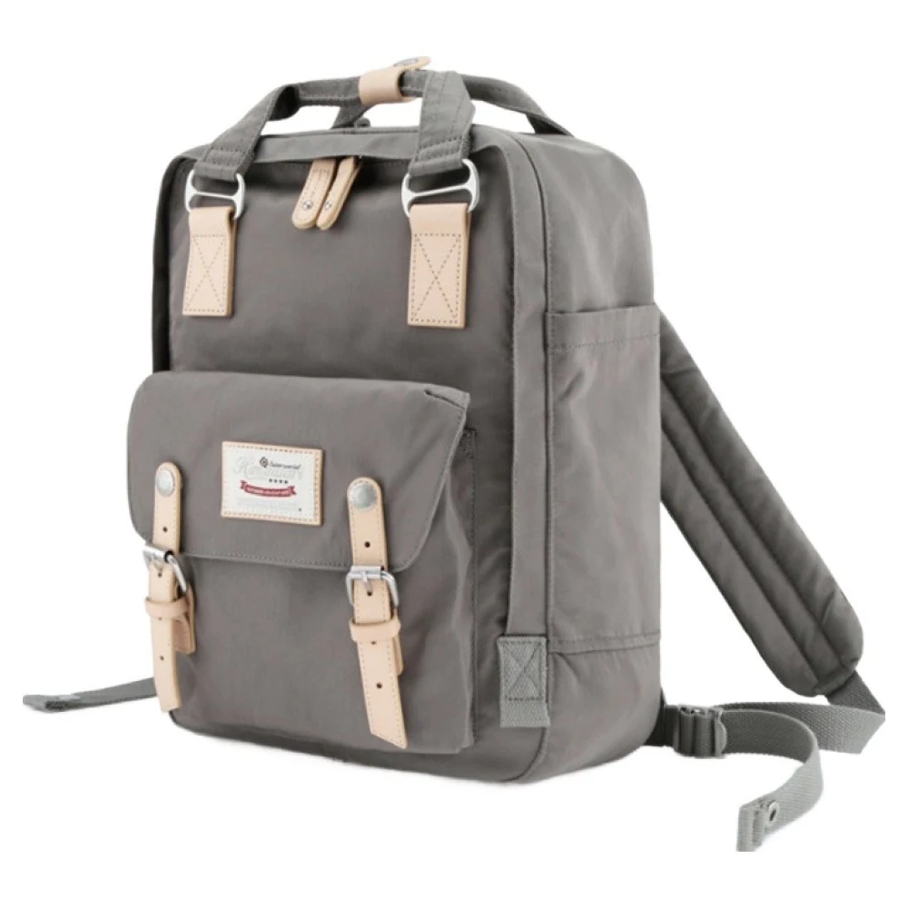
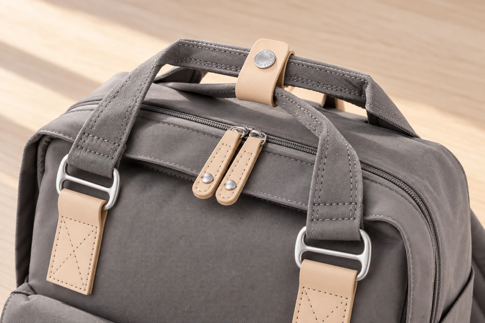

백팩 손잡이 두 개를 묶는 밴드, 언제 잠그고 풀까

백팩을 잠깐 손에 들려고 위쪽을 잡았는데 손잡이가 하나만 걸릴 때가 있습니다. 앞뒤로 놓인 두 손잡이는 손을 뻗는 방향에 따라 따로 잡히기도 합니다. 그 가운데 작은 밴드가 달려 있다면, 이 밴드는 언제까지 잠가 두는 편이 좋을까요. 손에 들기와 가방 열기는 손잡이에 서로 다른 움직임을 요구합니다. 두 손잡이를 모으는 일과 입구를 벌리는 일을 나누어 보면 작은 부품의 쓰임이 분명해집니다.
여기서 살펴보는 No.188L 실제 제품 사진에는 회색 손잡이 두 개를 감싸는 베이지색 연결 밴드가 보입니다. 상세 사진에서는 둥근 스냅 단추로 여닫는 모습도 확인할 수 있습니다. 가방 입구의 지퍼, 앞 포켓의 벨트 모양 장식과는 별개의 부품입니다. 이 글은 확인한 외형을 바탕으로 손을 쓰는 순서를 설명합니다. 밴드의 내하중이나 손잡이의 강도를 시험한 안내는 아닙니다.
손에 들 때는 두 손잡이를 함께 잡는 위치부터
연결 밴드를 잠그면 앞뒤 손잡이가 모인 상태를 만들 수 있습니다. 손을 넣을 곳을 찾기 쉬워지는 구조지만, 실제로 들어 올리기 전에는 손가락이 두 손잡이를 모두 감쌌는지 보는 편이 좋습니다. 밴드가 잠겨 있다는 것과 두 손잡이를 잡았다는 것은 같은 상태가 아닙니다. 작은 베이지색 탭만 손끝으로 집어 든 모습은 이 밴드가 두 손잡이를 모으는 용도라는 설명과도 맞지 않습니다.
책상 옆에서 의자 옆으로 옮기는 짧은 동작을 떠올려 보세요. 먼저 가방을 받친 상태에서 두 손잡이를 모아 잡고, 필요하면 밴드를 잠근 다음 들어 올립니다. 이미 공중에 든 가방의 밴드를 한 손으로 맞추려 하면 손잡이를 놓았다 다시 잡는 동작이 생깁니다. 밴드는 짐의 무게를 줄이는 부품도 아닙니다. 무겁게 느껴질 때 밴드를 더 단단히 조이는 것으로 해결하려 하지 말고, 내려놓아 잡는 방식과 내용물을 다시 살펴야 합니다.

입구를 벌릴 때는 잠금 상태가 달라집니다
두 손잡이는 각각 입구의 앞뒤 쪽에 붙어 있습니다. 둘을 모아 놓은 채 주 지퍼를 열면, 지퍼는 열려 있어도 손잡이를 양쪽으로 충분히 치우기 어려울 수 있습니다. 가방을 내려놓고 연결 밴드를 푼 뒤, 손잡이를 입구 바깥쪽으로 옮겨 보세요. 손을 넣는 길을 만드는 동작과 지퍼를 여는 동작을 따로 생각할 수 있습니다. 밴드를 푼다고 지퍼까지 저절로 열리는 것은 아닙니다.
반대로 잠깐 바깥 포켓만 사용할 때는 주 수납부의 손잡이까지 매번 풀 필요가 없을 수 있습니다. 어떤 입구를 여는지에 따라 필요한 동작이 다르기 때문입니다. 앞 포켓을 열고 닫는 일, 주 지퍼를 움직이는 일, 손잡이를 분리하는 일을 늘 한 묶음으로 하지 않아도 됩니다. 다만 손잡이가 지퍼 이동 경로를 덮었다면 먼저 치워야 합니다. 힘으로 당겨서 통과시키기보다 걸리는 부품을 눈으로 확인하는 편이 낫습니다.
No.188L에는 손잡이가 본체로 이어지는 은색 사각 고리와 베이지색 부착부도 보입니다. 중앙의 연결 밴드는 이 고리들과 다른 위치에 있습니다. 사진에서 금속 부품이 여러 개 보인다고 모두 같은 잠금장치로 읽으면 사용법을 혼동하기 쉽습니다. 손잡이를 잡는 부분, 손잡이가 본체에 붙는 부분, 두 손잡이를 잠깐 모으는 부분을 구별해 보세요. 가운데 스냅을 풀 때 손잡이 부착부까지 분해할 이유는 없습니다.

잠근 채 두기와 풀어 두기의 차이
손잡이를 모아 두면 모양은 단정해 보일 수 있지만, 수납부를 자주 여는 자리에서는 스냅을 여닫는 동작이 늘어납니다. 반대로 풀어 두면 입구를 벌리기 앞서 밴드를 해제할 필요가 없지만, 손에 들 때 두 손잡이를 따로 모아야 합니다. 어느 쪽이 늘 낫다고 정하기보다 지금 이어질 동작을 기준으로 선택하면 됩니다. 이 차이는 외출용과 실내용이라는 장소 구분보다 손에 들기와 열어 보기라는 동작 구분에 가깝습니다.
| 다음 동작 | 손잡이와 밴드를 보는 순서 |
|---|---|
| 손잡이로 옮기기 | 받친 상태에서 두 손잡이를 모으고, 함께 잡혔는지 확인합니다. |
| 주 수납부 안을 보기 | 내려놓은 뒤 밴드를 풀고 손잡이를 입구에서 치웁니다. |
| 바깥 포켓만 열기 | 그 포켓의 지퍼와 주변 부품이 걸리는지 먼저 봅니다. |
밴드를 열어 둔 동안에는 탭이 입구 안으로 말려 들어갔는지도 살펴보세요. 천이나 지퍼 사이에 끼워 둔 채 닫으면 다음에 열 때 어디에 걸렸는지 찾기 어렵습니다. 스냅 단추를 맞출 때는 두 면의 위치를 보고 누르고, 맞지 않는 상태를 힘으로 누르지 않습니다. 손잡이 원단이 꼬인 채 묶여 있으면 한쪽이 비틀어져 보일 수 있으니, 두 손잡이를 펴서 모은 뒤 잠그면 상태를 확인하기 쉽습니다.
밴드가 잠겨 있어도 주 지퍼는 따로 확인하세요
두 손잡이가 붙어 있으면 위쪽이 닫힌 듯 보일 수 있습니다. 하지만 손잡이 연결은 주 수납부를 잠그는 기능과 다릅니다. 가방을 들기 직전에 연결 밴드만 보고 출발하지 말고, 주 지퍼가 실제로 닫혔는지도 확인해야 합니다. 이 밴드를 도난 방지 장치나 입구를 봉하는 장치로 해석할 근거는 없습니다. 사진에서 보이는 단정한 모양과 수납부의 개폐 상태는 따로 읽어야 합니다.
No.188L의 확인된 외부 크기는 가로 28 × 세로 39 × 폭 15cm이며, 소재 표기는 겉감 나일론·안감 폴리에스터입니다. 이 수치로 손잡이 안쪽 여유나 두꺼운 장갑을 낀 손의 통과 여부까지 알 수는 없습니다. 그런 조건이 중요하다면 제품 문의나 실제 확인이 필요합니다. 손잡이 밴드의 편의는 작은 부품 하나의 유무보다, 두 손잡이를 잡고 입구를 여닫는 자신의 순서와 맞는지에서 판단하는 편이 정확합니다.